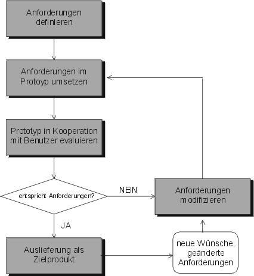

Um relevante Spezifikationen und Enwicklungsprobleme zu untersuchen.
Sie dienen außerdem als Basis für Diskussionen und helfen bei Entscheidungen.
Welche Arten von Prototyping gibt es?
Exploratives Prototyping
Experimentelles Prototyping
Evolutionäres Prototyping
Exploratives Prototyping
- Wenn eine Problemstellung unklar ist.
- Anforderungen werden geklärt.
Experimentelles Prototyping
- Um die technische Umsetzung zu klären.
- Überprüfung von Teilentwürfen und Lösungsskizzen
Evolutionäres Prototyping
- Kontinuierlicher, evolutionärer Prozess.
- Kontinuierliches Verfahren um ein System an sich rasch verändernde Rahmenbedingungen anzupassen.
Horizontales und vertikales Prototyping
Horizontales Prototyping
- Ziel ist es, komplette Features zu testen.
- Wenig Genauigkeit.
- Usability Bereiche wie, Navigation, Feature Platzierung oder allgemeines Design testen.
Prototyping Vor- und Nachteile
Vorteile:
- Anfordeungen können laufend präzisiert werden.
- Senkung des Risikos der Fehlentwicklung.
Nachteile:
- Während der Entwicklung entstehen zusätzliche Kosten.
- Leitet oft dazu, Anforderungen weder korrekt zu erheben noch sauber zu dokumentieren.
Welche Arten von Prototypen gibt es?
Demonstrationsprototyp
Pilotsysteme
Demonstrationsprototyp
- In frühen Phasen eines Projekts um die grobe Entwicklungsrichtung zu zeigen.
- Noch weit von der finalen Realisierung entfernt.
Pilotsysteme
- Enthalten bereits große Teile der finalen Software.
- Anwender sind bereits mit eingebunden und können das System testen.
Paper-Prototyping
Vorteile:
- Frühe Untersuchung von Usability Problemen.
- Schneller Design-Aufbau und -Änderung.
- Spart Zeit und Geld.
Prototyp Darstellungen
Paper-Prototyping
Storyboard
Wireframes
Prototyping: Prozeßmodell
